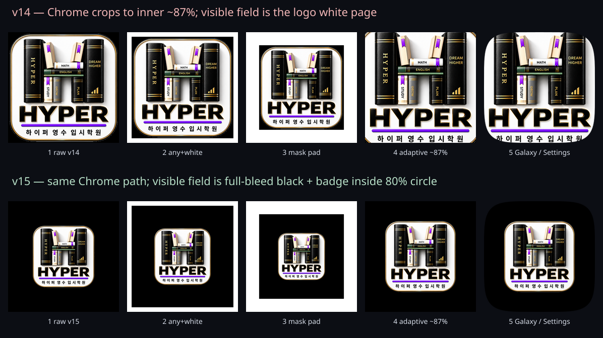
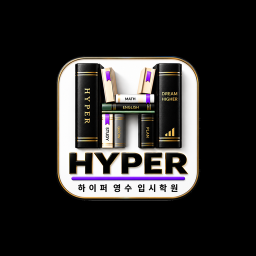

Source: Chromium WebappsIconUtils. Maskable icons are padded then drawn as AdaptiveIconDrawable. Galaxy home and Samsung Settings both use that adaptive resource, so they match.

v15 stages

1. Raw source (what the PNG contains)2. purpose:any legacy — 2/44 pad + white flatten3. maskable adaptive layer — 15.45% pad4. AdaptiveIconDrawable viewport (~87% of source)5. Galaxy One UI / Settings mask of #4